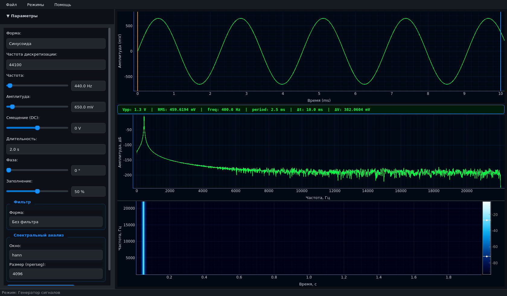

Профессиональный десктопный комплекс для работы с аудиосигналами. 11 типов сигналов, 4 типа IIR-фильтров, осциллограф с курсорами, БПФ-спектр, спектрограмма и захват с микрофона в реальном времени.

Всё необходимое для генерации, обработки и анализа сигналов в одном приложении
11 типов сигналов с полной настройкой параметров: частота, амплитуда, фаза, смещение, скважность. Поддержка частот дискретизации от 8 до 96 кГц.
Временная область с двумя подвижными курсорами и 6 автоматическими измерениями: Vpp, RMS, частота, период, Δt, ΔV.
Амплитудный спектр в децибелах с выбором окон (Ханн, Хэммин, Блэкман, Кайзер) и настраиваемым размером сегмента до 8192 точек.
Визуализация изменения спектра во времени с цветовой шкалой и автоматической настройкой уровней отображения.
4 типа аппроксимации (Баттерворт, Чебышёв I/II, Эллиптический) × 4 вида фильтров (НЧ, ВЧ, ПФ, без фильтра). Порядок до 10.
Запись с микрофона с кольцевым буфером 5 секунд и одновременным отображением осциллограммы, спектра и спектрограммы.
Прослушивание сгенерированных и загруженных сигналов напрямую в приложении через sounddevice.
Загрузка WAV файлов (8/16/24/32 бит), выбор стереоканала, полная спектральная обработка и экспорт.
Профессиональный интерфейс в стиле GitHub Dark с зелёными сигналами на чёрном фоне графиков
Полный набор стандартных и специальных сигналов для любых задач DSP
Четыре типа аппроксимации и четыре вида фильтров с полной настройкой параметров